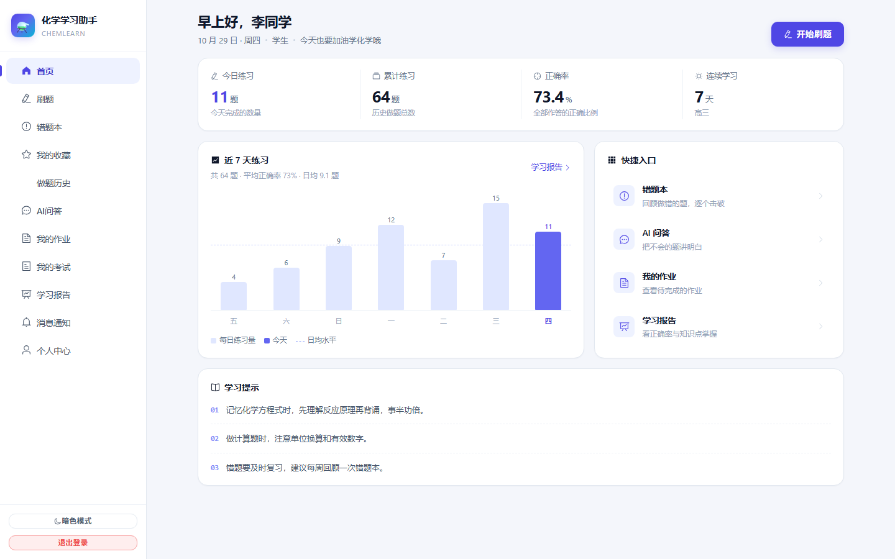
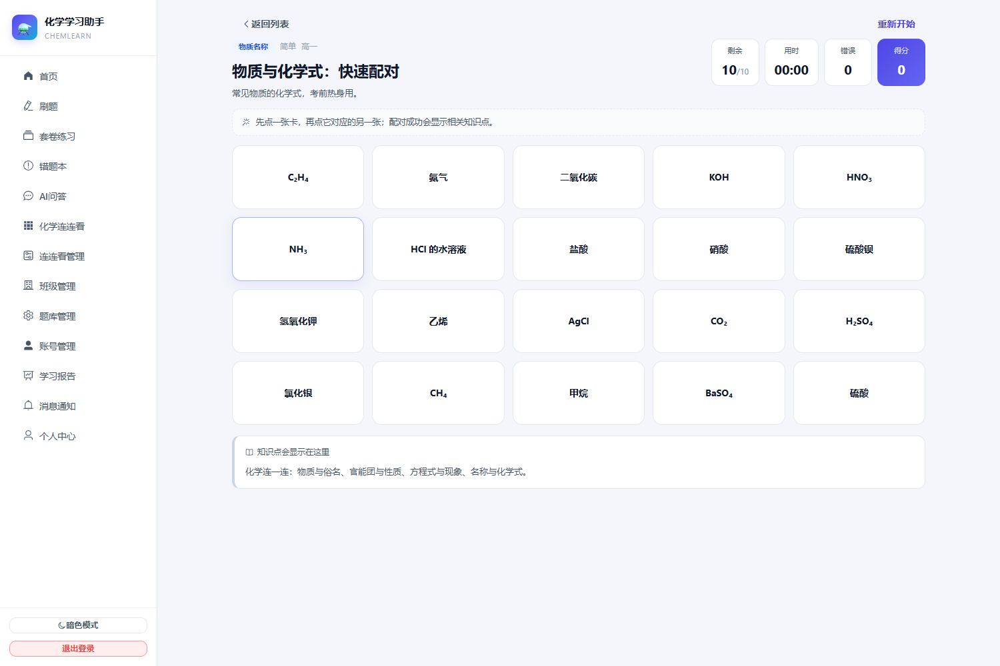
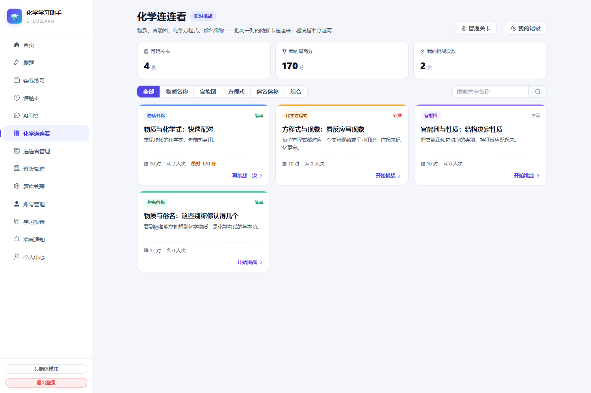
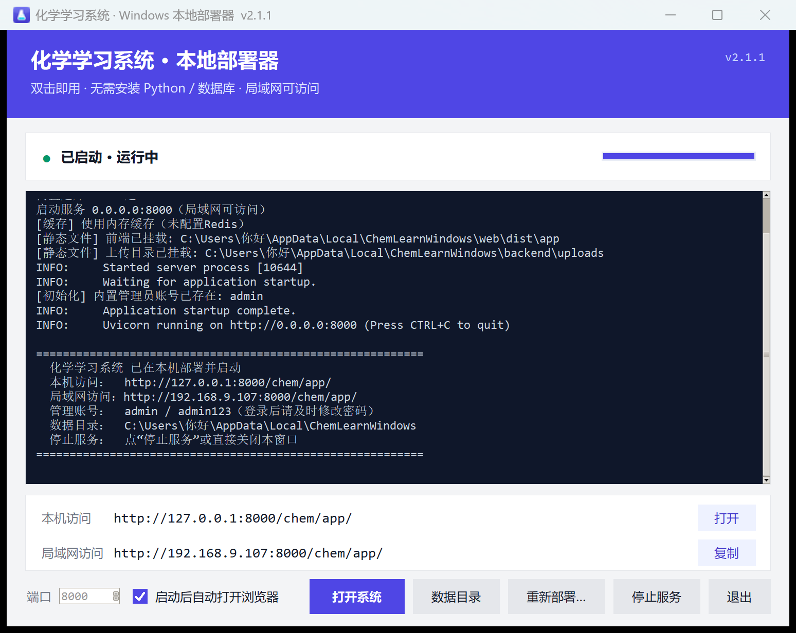

题库刷题
按章节、题型、难度筛选，顺序练习或随机组卷；化学式自动排版，支持 LaTeX 与手写草纸。
题库刷题、错题本、AI 讲解、化学连连看、作业与考试、结构式编辑器…… 一个地址就能完成教与学，也可以在 Windows 上本地部署。

围绕高中化学的日常教学流程设计，老师和学生用同一个系统。
按章节、题型、难度筛选，顺序练习或随机组卷；化学式自动排版，支持 LaTeX 与手写草纸。
答错自动收录，生成 AI 解析和变式题；支持追问，讲清楚每一步。
物质与俗名、官能团与性质、方程式与现象、名称与化学式，四类配对关卡，计时计分。
老师按班级布置，学生在线作答；自动判分、成绩排名、分数段统计，支持导出 CSV。
内置 Ketcher，画双键、官能团、环和立体键；支持 KingDraw 的 .kdx / .cdx / .mol 导入。
练习量、正确率、知识点掌握情况、班级统计，一眼看出薄弱环节。
深色模式、平板操作、化学式自动排版，细节都按日常使用打磨。


同一套系统，两种部署方式；数据都在自己手里。
打开地址就能登录，适合机房、教室和平板。学生无需安装任何软件。
进入系统 →单文件 exe，双击即可在本机运行，局域网内其它设备也能访问。
安装包由管理员提供FastAPI + SQLite + nginx，一条命令部署；数据库和上传文件都保存在本地。
查看源码 →
Windows 部署器自带前端、后端和示例题库，自动选择端口、打开浏览器，并在窗口里管理启停、地址和数据目录。
已经有账号？直接进入系统。没有账号？联系老师开通。